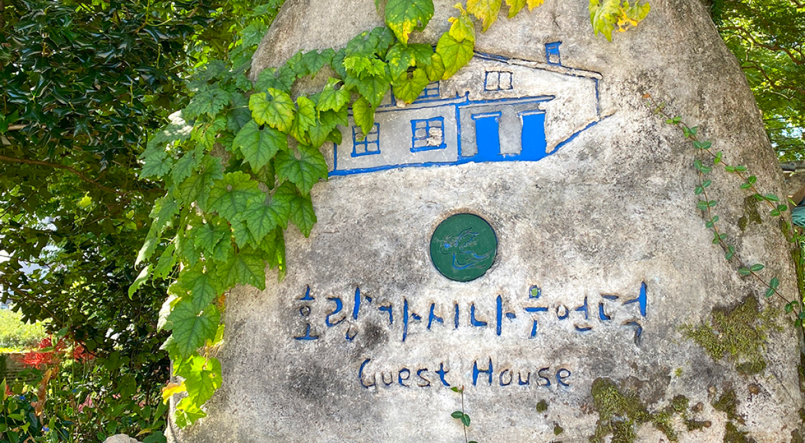
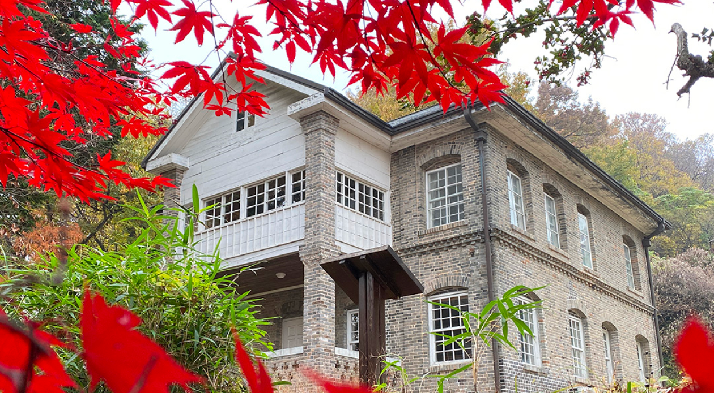
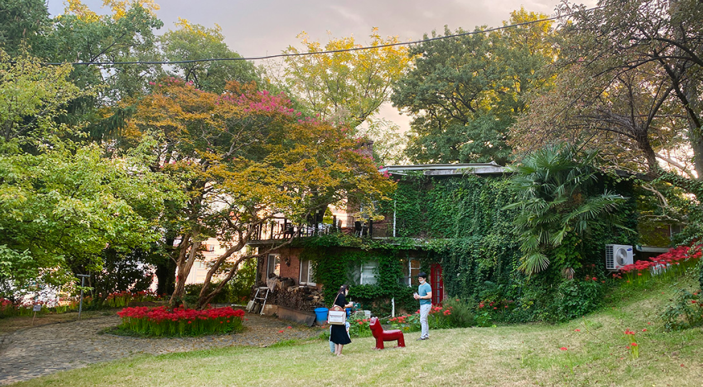

ABOUT
호랑가시나무언덕 게스트하우스
힐링, 휴식, 자연, 예술, 산책, 역사유적, 고요, 선교성지 이 모든 느끼는 곳
양림동과 호랑가시나무언덕
Yangrim-dong and Horanggasinamu hill
양림동은 20세기 초 서구 선교사들이 광주 최초의 근대식 학교와 병원 등을 설립하면서 본격적인 광주근대화가 시작된 곳으로 광주의 근대역사가 살아 숨 쉬는 역사문화마을입니다.
오랜 세월에도 불구하고 온전하게 보존된 서구식 건축물들과 전통 한옥이 공존하고 있어 광주에서 가장 이국적인 분위기를 느낄 수 있는 곳입니다.
호남신학대에서 수피아여고로 이어지는 양림동 언덕배기는 수령 200년 이상의 호랑가시나무들이 다수 자생하고 있어서 ‘호랑가시나무 언덕’이라고도 불립니다.
그 언덕 중간에 위치한 뉴수마 선교사 사택은 건축된 지 70여년이 된 적벽돌 건물로 현재 호랑가시나무언덕 게스트하우스로 사용되고 있습니다.
게스트하우스는 도시 속에 마련된 작은 쉼터로 고즈넉한 분위기 속에서 산책, 독서, 음악 감상 등 다양한 여가 활동을 만끽할 수 있는 최적의 공간입니다.
Yangrim-dong where our guest house is located was the very beginning point of Gwangju modernization in the 1900s when the missionaries
from the western world founded the first modern schools and hospital.
This modern-history-and-culture village doesn't only preserve well these old modern buildings which the missionaries had built
in the early 20th century but also famous Korean traditional houses, presenting very unique impressions to the first-time visitors.
As our guest house stands at the upper are a of this village and there are many native hollies(HORANGGASINAMU in Korean) in the neighborhood,
we named it Horanggasinamu Hill.
Our guest house is the best place for spending a leisure time calmly in Gwangju.
It is a small shelter nested close from the downtown but provides very silent and easy atmosphere even in the daytime enough to read the books without any disturbance.


